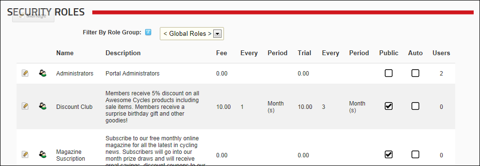

Adding a Security Role with a Fee
How to create a security role that charges a subscription and/or a trial fee using the Security Roles module. Important: You will need to configure the Payment Processor under Site Settings, in order to enable fee based roles/services. The fee and billing period fields do not display until the payment processor is configured. See "Setting the Payment Processor"
- Navigate to Admin >
 Security Roles - OR - Go to a Security Roles module.
Security Roles - OR - Go to a Security Roles module.
- Click the Add New Role link.
- Expand the Basic Settings section.
- In the Role Name text box, enter a name for the Security Role.
- In the Description text box, enter a brief description of the Security Role.
- Optional. At Role Group, select a group for this role if required.
- At Public Role?, select one of the following options:
- Mark
 the check box if all users are able to view details of this role and subscribe to this role. Public Roles can be maintained by user on their profile under Manage Service.
the check box if all users are able to view details of this role and subscribe to this role. Public Roles can be maintained by user on their profile under Manage Service. - Unmark
 the check box .if the role is Private. Details of private roles are not displayed on the user profile page. Only Administrators can add a user to a Private role unless it has an RSVP Code (see below) which has been supplied to the user.
the check box .if the role is Private. Details of private roles are not displayed on the user profile page. Only Administrators can add a user to a Private role unless it has an RSVP Code (see below) which has been supplied to the user.
- At Auto Assignment, select one of the following options:
- Mark the check box if users are automatically assigned to this role. This will expose the "Assign to existing users" field.
- At Assign to Existing Users, to assign all current and future users to this role - OR - to only assign any new users that are created to this role.
- Unmark the check box if users must be manually added to the role. If the role is public, then users can add themselves. If the role is not public, then only Administrators and SuperUsers can add user to the role.
- At Security Mode,
select one of the following options:
- Security Role: Select to add a security role.
- Social Group: Select to add a social group. Social groups are displayed on the Social Groups module allowing site members to join, follow and participate in groups.
- Both: Select to add a role that is both a social group and a security role.
- At Status, select one of the following options:
- Disabled: The Role Group is not available regardless of the "Public Role" setting.
- Approved: The Role Group is available dependent upon the "Public Role" setting.
- Pending: The Role Group is available to non-Administrators/SuperUsers regardless of the "Public Role" setting. However, the Group is not permitted until it is moved to "Approved" status.
- At Security Mode, select one of the following options:
- Security Role: Select to add a security role.
- Social Group: Select to add a social group. Social groups are displayed on the Social Groups module allowing site members to join, follow and participate in groups.
- Both: Select to add a role that is both a social group and a security role.
- At Status, select one of the following options:
- Disabled: The Role Group is not available regardless of the "Public Role" setting.
- Approved: The Role Group is available dependent upon the "Public Role" setting.
- Pending: The Role Group is available to non-Administrators/SuperUsers regardless of the "Public Role" setting. However, the Group is will not have permission until it is moved to "Approved" status.

- Select the Advanced Settings tab and complete any of the following fee settings.
- In the Service Fee text box, enter the fee amount charged to become a member of the Security Role. This will enable the "Bill Period (Every)" field below.
- In the Billing Period (Every) text box, enter a number and select a billing period. For example, enter '1' and select 'Month(s)' for a monthly billing period.
- Optional. In the Trial Fee text box, enter the fee amount charged to access this role for a trial period.
- In the Trial Period (Every) text box, enter a number and select a billing period. If no trial fee is charged, but access to the role will expire on a given day, complete this field as this sets the access period for the role. For Example, the below image shows a trial fee of $10.00 that will be charged for the first 3 months, after which the fee will revert to the standard Service Fee of $10.00 per month.
- Optional. In the RSVP Code text box, enter a code that enables users to subscribe to this role.
- Optional. At Icon, select or upload an image for the role. See "Setting a File Link"

-

-
See "Adding a Security Role with an RSVP Code"